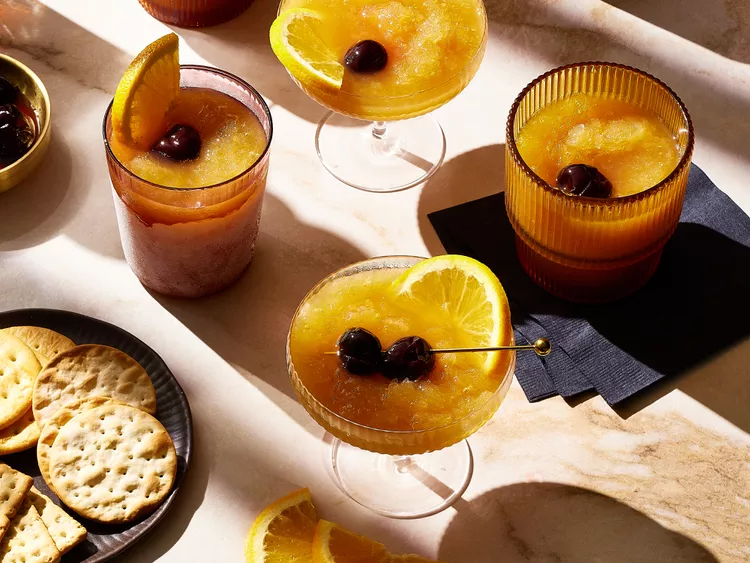

Bourbon slush with drunken cheries

Descritption
Stay party-ready with a make-ahead, big-batch cocktail. The bourbon slush and boozy cherries will keep for up to a year!
Ingredients
Drunken cheries
- 1/2 cup brown sugar
- 2 (1x3-inch) strips orange peel
- 2 1/2 cups bourbon
- 1/4 teaspoon vanilla extract
- 1 cup (thawed) frozen pitted dark sweet cherries or pitted fresh cherries
Bourbon slush
- 6 cups water
- 6 black tea bags
- 1 cup white sugar
- 1 (12-ounce) can frozen lemonade concentrate
- 1 (6 ounce) can frozen orange juice concentrate
- halved orange slices, for garnish
Steps
- For drunken cherries, combine brown sugar and orange peel in a pint-size canning jar. Muddle until peel releases oils. Add 1/2 cup bourbon and the vanilla. Cover and shake vigorously until sugar dissolves. Add cherries; cover and shake gently to combine. Chill at least 8 hours (and up to 1 year).
- Meanwhile, bring 3 cups water to a boil in a saucepan. Remove from heat. Add tea bags. Steep according to package directions. Remove and discard tea bags. Add white sugar; stir to dissolve. Let cool.
- Pour tea mixture and remaining 3 cups water into an extra-large pitcher or freezer-safe container. Add lemonade and orange juice concentrates; stir until combined. Stir in remaining 2 cups bourbon. Freeze until almost firm, 8 to 12 hours. (Freeze in an airtight container up to 1 year.)
- When ready to serve, let frozen tea mixture stand at room temperature until partially thawed and slushy, 15 to 30 minutes. Stir well, then spoon into glasses. Garnish with drunken cherries and orange slices. Serve immediately.